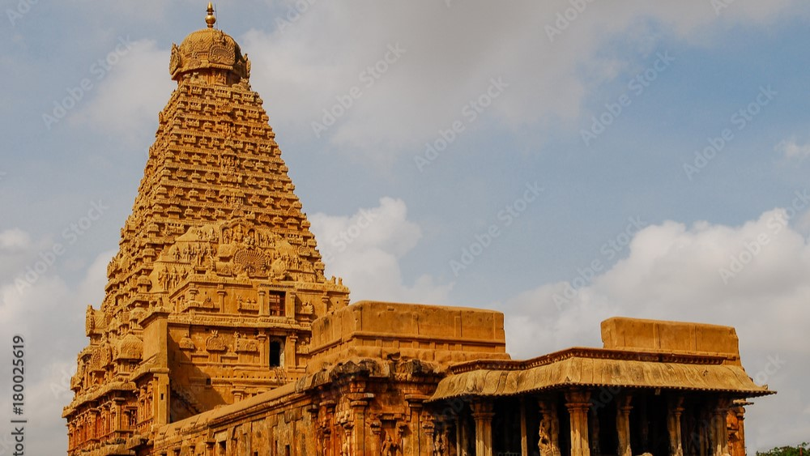
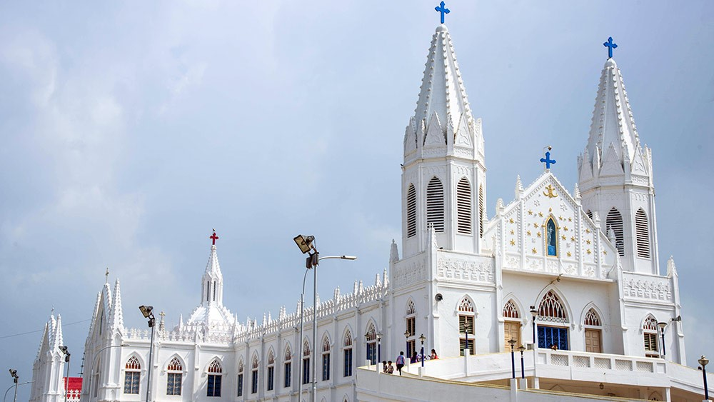
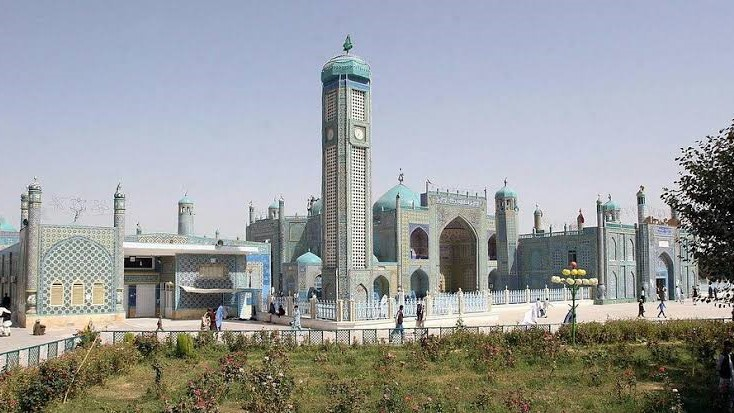

Discover Sacred Places Across India
Temples
"A temple is a sacred building dedicated to religious
worship, prayer, rituals, and spiritual activities"

A temple is a place of worship where people gather to pray, perform religious rituals, and express devotion to a deity or deities. Temples are found in several religions,
although the term is most commonly associated with Hinduism.
Know about temples
1.Thanjai Periya Kovil (Brihadeeswarar Temple)
"A timeless monument that reflects
the strength of faith and the brilliance of ancient architecture."
History of Thanjai Periya Kovil (Brihadeeswarar Temple)Brihadeeswarar Temple, popularly known as Thanjai Periya Kovil, was built by the Chola emperor Raja Raja Chola I and completed in 1010 CE. Dedicated to Lord Shiva, the temple is one of the finest examples of Dravidian architecture and was constructed primarily from granite. Its magnificent 66-meter-tall vimana, intricate carvings, and detailed inscriptions reflect the artistic and engineering excellence of the Chola dynasty. Recognized as a UNESCO World Heritage Site as part of the Great Living Chola Temples, Thanjai Periya Kovil has remained an active place of worship for over a thousand years and continues
to be a symbol of Tamil culture, history, and spiritual heritage.
Brihadeeswarar Temple, popularly known as Thanjai Periya Kovil, is a magnificent Hindu temple located in Thanjavur, Tamil Nadu. Dedicated to Lord Shiva, it is one of the greatest examples of Dravidian architecture and showcases the artistic and engineering excellence of the Chola dynasty. Built almost entirely from granite, the temple is famous for its towering 66-meter (216-foot) vimana, beautifully carved sculptures, massive monolithic Nandi statue, and detailed inscriptions that preserve the rich history of the Chola Empire. The temple's spacious courtyards, majestic gateways, and intricate artwork create a serene and spiritually uplifting atmosphere. Recognized as a UNESCO World Heritage Site, Thanjai Periya Kovil
remains an active place of worship and a symbol of Tamil Nadu's rich cultural, historical, and architectural heritage, attracting millions of devotees and visitors every year
Thanjai Periya Kovil has been carefully preserved to protect its historical, cultural, and architectural significance for future generations. The Archaeological Survey of India (ASI) is responsible for maintaining the temple, carrying out regular inspections, cleaning, structural repairs, and conservation work while preserving its original Chola-era design. As a UNESCO World Heritage Site, the temple also receives international recognition and support for its conservation. Efforts are made to protect its granite structures, ancient inscriptions, sculptures, and paintings from weathering and natural deterioration. Through continuous maintenance, scientific restoration techniques, and responsible tourism practices, Thanjai Periya Kovil remains one of India's best-preserved historical monuments and continues
to serve as an active place of worship and a symbol of Tamil heritage
2.Sri Meenakshi Amman Temple (Madurai)
"Where devotion blossoms and history comes alive in every carved stone."
Sri Meenakshi Amman Temple, located in the ancient city of Madurai, Tamil Nadu, is one of the most revered Hindu temples in India. Dedicated to Goddess Meenakshi, an incarnation of Goddess Parvati, and Lord Sundareswarar (Shiva), the temple has a history spanning over 2,000 years. Although the temple's origins are ancient, much of the present-day structure was rebuilt and expanded during the 16th and 17th centuries by the Nayak rulers, especially King Tirumalai Nayak, after earlier portions were damaged during invasions. The temple is renowned for its towering, brightly colored gopurams (gateway towers), intricate sculptures, and vast pillared halls, showcasing the brilliance of Dravidian architecture. Today, Sri Meenakshi Amman Temple remains an active place of worship, a major pilgrimage destination, and a symbol
of Madurai's rich cultural, artistic, and spiritual heritage.
Sri Meenakshi Amman Temple is a magnificent Hindu temple located in Madurai, Tamil Nadu, and is one of the most famous temples in India. Dedicated to Goddess Meenakshi and Lord Sundareswarar (Shiva), the temple is celebrated for its stunning Dravidian architecture, towering gopurams adorned with thousands of colorful sculptures, intricately carved pillars, and spacious halls. Spread across approximately 14 acres, the temple complex features sacred shrines, the Golden Lotus Tank (Porthamarai Kulam), and the renowned Aayiram Kaal Mandapam (Hall of a Thousand Pillars). As a vibrant center of worship, culture, and history, Sri Meenakshi Amman Temple attracts millions of devotees and tourists each year, standing as a remarkable symbol
of Tamil Nadu's spiritual, artistic, and architectural heritage.
Sri Meenakshi Amman Temple has been carefully preserved to protect its rich cultural, religious, and architectural heritage. The Archaeological Survey of India (ASI), the Hindu Religious and Charitable Endowments (HR&CE) Department of Tamil Nadu, and the temple administration work together to maintain the temple through regular conservation, structural repairs, and restoration of its sculptures, towers, and historic mandapams. The temple's colorful gopurams are periodically repainted using traditional methods to preserve their artistic beauty while maintaining their original design. Continuous maintenance, responsible tourism, and heritage conservation efforts ensure that this centuries-old temple remains a vibrant place of worship and one of
India's most treasured architectural landmarks for future generations.
3. Ramanathaswamy Temple (Rameswaram)
"Where faith meets the sea, and every prayer echoes through history."
Ramanathaswamy Temple, located on Rameswaram Island in Tamil Nadu, is one of the holiest Hindu temples dedicated to Lord Shiva and is one of the twelve Jyotirlingas in India. According to Hindu tradition, Lord Rama worshipped Lord Shiva at this sacred site after defeating Ravana in Lanka, seeking absolution before returning to Ayodhya. It is believed that Rama installed the Shiva Lingam here, making the temple one of the most important pilgrimage destinations in Hinduism. The temple's origins date back several centuries, with major construction and expansions carried out between the 12th and 17th centuries by the Pandya rulers, the Jaffna Kingdom, and the Sethupathi kings of Ramanathapuram. Renowned for its magnificent Dravidian architecture and the world's longest temple corridors, Ramanathaswamy Temple continues to be a revered center of worship, history, and cultural heritage,
attracting millions of devotees and visitors every year.
Ramanathaswamy Temple, located in Rameswaram, Tamil Nadu, is one of the most sacred Hindu temples dedicated to Lord Shiva. It is renowned for its magnificent Dravidian architecture, towering gopurams, intricately carved stone pillars, and the world's longest temple corridors, which stretch for nearly 1,200 meters. The temple is also famous for its 22 sacred theerthams (holy wells), where devotees perform ritual baths before offering prayers. Situated on Rameswaram Island near the Bay of Bengal, the temple holds immense religious significance as one of the twelve Jyotirlingas and a key destination in the Char Dham pilgrimage. Blending spiritual importance with architectural grandeur, Ramanathaswamy Temple stands as a remarkable symbol of India's rich cultural and religious heritage,
attracting millions of pilgrims and visitors each year.
Ramanathaswamy Temple has been carefully preserved to safeguard its immense religious, historical, and architectural significance. The Archaeological Survey of India (ASI), the Hindu Religious and Charitable Endowments (HR&CE) Department of Tamil Nadu, and the temple administration work together to maintain the temple through regular conservation, structural repairs, and restoration of its ancient corridors, stone pillars, sculptures, and gopurams. Special care is taken to protect the temple from the effects of the coastal climate, including salt-laden air and humidity, while preserving its original Dravidian architectural features. Through ongoing maintenance, scientific conservation methods, and responsible tourism initiatives, Ramanathaswamy Temple continues to remain a well-preserved spiritual landmark and an enduring
symbol of India's rich cultural and religious heritage.
Churches
"A church is a sacred place of worship for Christians, where people come together to pray, attend religious services, and celebrate their faith. It serves as a center for
spiritual growth, community worship, and religious ceremonies."

A church is a place of worship for Christians, where believers
gather to pray, worship God, celebrate religious services, and strengthen their faith. Churches also serve as centers for community gatherings, spiritual guidance, charitable activities, and important ceremonies such as baptisms, weddings, and Christmas and Easter celebrations.
Know about Churches
1. Basilica of Our Lady of Good Health, Velankanni
"A place where faith finds hope
and every prayer is offered with trust."
The Basilica of Our Lady of Good Health, located in Velankanni, Tamil Nadu, is one of the most revered Christian pilgrimage sites in India. Its origins date back to the 16th century and are closely associated with local traditions of the Virgin Mary appearing to a shepherd boy and later to a disabled buttermilk vendor, both of whom were miraculously healed. Another well-known tradition tells of Portuguese sailors who survived a violent storm at sea after praying to the Virgin Mary. In gratitude, they built a chapel at Velankanni, which later grew into a magnificent church. Over the centuries, the shrine was expanded and developed to accommodate the increasing number of pilgrims from India and around the world. In 1962, Pope John XXIII granted it the status of a Minor Basilica, recognizing its importance in the Catholic Church. Today, the Basilica of Our Lady of Good Health is a symbol of faith, hope, and unity,
welcoming millions of pilgrims of different religions every year.
The Basilica of Our Lady of Good Health, located in Velankanni, Tamil Nadu, is one of the most important Christian pilgrimage destinations in India. Dedicated to the Blessed Virgin Mary under the title Our Lady of Good Health, the basilica is renowned for its striking Gothic-style architecture, pristine white exterior, soaring spires, and peaceful surroundings. Situated along the Bay of Bengal, the shrine attracts millions of pilgrims each year who come to offer prayers, seek blessings, and express gratitude. The basilica also features a large prayer hall, a museum displaying offerings from devotees, and facilities for pilgrims from around the world. Known for its atmosphere of faith, hope, and compassion, the Basilica of Our Lady of Good Health stands as a symbol of religious harmony and
spiritual devotion, welcoming people of all faiths.
The Basilica of Our Lady of Good Health is carefully preserved to protect its religious, historical, and architectural significance. The Roman Catholic Diocese of Nagapattinam, along with the basilica administration, oversees its maintenance through regular conservation, structural repairs, and restoration of its Gothic-style architecture, prayer halls, and surrounding facilities. Special attention is given to preserving the basilica's white façade, soaring spires, and historic chapel while ensuring the safety and comfort of the millions of pilgrims who visit each year. Continuous maintenance, heritage conservation, and responsible management help preserve the basilica as a place of worship,
peace, and spiritual inspiration for future generations.
2. St. Thomas Cathedral Basilica (Santhome Basilica), Chennai
"Where faith
and history unite at the resting place of Saint Thomas the Apostle."
St. Thomas Cathedral Basilica, popularly known as Santhome Basilica, is one of the most significant Christian churches in India and is located in Chennai, Tamil Nadu. It is traditionally believed to have been built over the tomb of Saint Thomas the Apostle, one of the twelve apostles of Jesus Christ, who is said to have arrived in India around 52 CE to spread Christianity. According to Christian tradition, Saint Thomas was martyred near present-day Chennai in 72 CE, and his remains were buried at the site where the basilica now stands. The original church was built by the Portuguese in the 16th century, and the present Neo-Gothic structure was constructed by the British in 1896. In recognition of its religious importance, Pope Pius XII declared it a Minor Basilica in 1956. Today, Santhome Basilica is one of the few churches in the world built over the tomb of an apostle of Jesus and remains a major pilgrimage destination,
attracting devotees and visitors from around the globe.
St. Thomas Cathedral Basilica, popularly known as Santhome Basilica, is a historic Roman Catholic church located in Chennai, Tamil Nadu. Dedicated to Saint Thomas the Apostle, it is one of the few churches in the world built over the tomb of an apostle of Jesus Christ. The basilica is renowned for its elegant Neo-Gothic architecture, featuring a striking white façade, soaring spire, beautiful stained-glass windows, and peaceful prayer halls. The church complex also includes a museum and an underground chapel that houses the tomb of Saint Thomas, making it a significant destination for pilgrims and visitors. Overlooking the Bay of Bengal, Santhome Basilica stands as a symbol of faith, history, and architectural beauty, attracting thousands of devotees
and tourists from around the world each year
St. Thomas Cathedral Basilica is carefully preserved to protect its religious, historical, and architectural heritage. The Archdiocese of Madras–Mylapore, in collaboration with heritage conservation experts, oversees the basilica's maintenance through regular inspections, structural repairs, and restoration of
its Neo-Gothic architecture, stained-glass windows, spire, and interior artwork. Special care is taken to preserve the tomb of Saint Thomas the Apostle, the underground chapel, and other historically significant features while ensuring the basilica remains a safe and welcoming place of worship. Through continuous conservation efforts, responsible management, and the support of the Christian community, Santhome Basilica continues to stand as a cherished spiritual landmark and an important part of India's religious and cultural heritage.
3. Our Lady of Snows Basilica, Thoothukudii
"Our Lady of Snows Basilica
stands as a beacon of hope, peace, and unwavering devotion."
Our Lady of Snows Basilica, located in Thoothukudi (Tuticorin), Tamil Nadu, is one of the oldest and most revered Catholic churches in India. The basilica was originally established by Portuguese missionaries in the 16th century, following the spread of Christianity along the Coromandel Coast. Dedicated to Our Lady of Snows (Nossa Senhora das Neves), the church became an important center of worship for the local fishing communities and Catholic faithful. The present church was constructed in the early 18th century and has undergone several renovations while preserving its religious and architectural significance. In 1982, Pope John Paul II granted the church the status of a Minor Basilica, recognizing its importance as a major pilgrimage center. Today, the basilica is renowned for its annual Our Lady of Snows Festival held every August, attracting thousands of pilgrims from across India and abroad, and continues to stand as a symbol of faith,
devotion, and the rich Christian heritage of Tamil Nadu.
Our Lady of Snows Basilica, located in Thoothukudi, Tamil Nadu, is one of India's most prominent Roman Catholic churches and an important pilgrimage destination. Dedicated to Our Lady of Snows (Nossa Senhora das Neves), the basilica is admired for its elegant architecture, pristine white façade, soaring towers, and peaceful atmosphere. Situated near the Bay of Bengal, it serves as a spiritual center for thousands of devotees who visit throughout the year to offer prayers and seek blessings. The basilica is especially famous for its annual Our Lady of Snows Festival in August, which draws pilgrims from across India and abroad. Blending religious significance, historical importance, and architectural beauty, the basilica stands as a lasting symbol of faith,
hope, and the rich Christian heritage of Tamil Nadu.
Our Lady of Snows Basilica is carefully preserved to protect its religious, historical, and architectural heritage. The Roman Catholic Diocese of Tuticorin, along with the basilica administration, is responsible for its regular maintenance, conservation, and restoration. Periodic structural repairs, preservation of the basilica's elegant façade, towers, and interior artworks, and routine upkeep ensure that its historic character is maintained while providing a safe and welcoming environment for worshippers. Special attention is also given to managing the large number of pilgrims who visit during the annual Our Lady of Snows Festival. Through continuous conservation efforts, responsible heritage management, and community support, the basilica remains a cherished place of worship and
an enduring symbol of Tamil Nadu's Christian heritage.
Mosques
"A mosque is a sacred place of worship for Muslims, where believers gather to perform prayers, seek spiritual guidance, and participate in religious and community activities.
It is a center of faith, learning, and unity in Islam."

A mosque is a place of worship for Muslims, where they gather to offer prayers, worship Allah, and participate in religious and community activities. Mosques serve as centers for spiritual guidance, education, and social gatherings,
helping to strengthen faith and bring communities together
Know about Mosques
1. Triplicane Big Mosque (Wallajah Mosque), Chennai
"Wallajah Mosque stands
as a timeless symbol of devotion, unity, and Islamic heritage."
Triplicane Big Mosque, also known as the Wallajah Mosque, is one of the oldest and most prominent mosques in Chennai, Tamil Nadu. It was built in 1795 by Muhammad Ali Wallajah, the Nawab of the Carnatic, to serve the growing Muslim community in Triplicane. Constructed in the traditional Indo-Islamic architectural style, the mosque is notable for being built primarily from granite without the use of iron or wood, reflecting the exceptional craftsmanship of the period. Over the centuries, it has remained an important center for Islamic worship, religious education, and community gatherings. Today, the Wallajah Mosque continues to be a significant place of prayer and a valued historical landmark, representing Chennai's rich Islamic heritage
and welcoming worshippers and visitors from across the region.
Triplicane Big Mosque, popularly known as the Wallajah Mosque, is a historic mosque located in Triplicane, Chennai, Tamil Nadu. Dedicated as a place of worship for the Muslim community, it is one of the city's oldest and most respected Islamic landmarks. Built in the elegant Indo-Islamic architectural style, the mosque is renowned for its spacious prayer hall, graceful arches, and impressive granite construction, completed without the use of iron or wood. The mosque serves as an important center for daily prayers, Friday congregational prayers, religious education, and community gatherings. Blending spiritual significance with historical and architectural value, the Wallajah Mosque stands as a lasting symbol of faith, unity, and Chennai's rich Islamic heritage,
welcoming worshippers and visitors throughout the year
Triplicane Big Mosque (Wallajah Mosque) is carefully preserved to protect its religious, historical, and architectural significance. The mosque is maintained by its management committee (Waqf administration) with the support of the local Muslim community. Regular maintenance, structural repairs, and conservation work are carried out to preserve its distinctive granite architecture, spacious prayer hall, arches, and other historic features while retaining its original character. Special care is taken to ensure the mosque remains a clean, safe, and peaceful place of worship for devotees. Through continuous preservation efforts, responsible management, and community support, the Wallajah Mosque continues to stand as an important spiritual center and a cherished symbol
of Chennai's rich Islamic heritage for future generations..
2. Thousand Lights Mosque, Chennai
"Where faith shines brightly
and every prayer brings peace to the soul."
The Thousand Lights Mosque, located in Royapettah, Chennai, Tamil Nadu, is one of the most prominent mosques in South India. Its history dates back to the early 19th century, when the area became an important center for the Shia Muslim community. The name "Thousand Lights" is believed to have originated from the tradition of illuminating the prayer hall with a thousand oil lamps during religious gatherings. The present mosque was constructed in 1810 by the Wallajah family, the Nawabs of the Carnatic, and has since undergone expansions and renovations to accommodate the growing number of worshippers. Featuring elegant Indo-Islamic architecture, with its distinctive domes and twin minarets, the mosque serves as a major center for prayer, religious education, and community activities. Today, the Thousand Lights Mosque remains an important spiritual landmark and a symbol of Chennai's rich Islamic
heritage, attracting devotees and visitors throughout the year.
Thousand Lights Mosque, located in Royapettah, Chennai, Tamil Nadu, is one of the largest and most renowned mosques in South India. It is an important place of worship for the Shia Muslim community and is celebrated for its magnificent Indo-Islamic architecture, featuring elegant white domes, twin minarets, spacious prayer halls, and beautifully designed interiors. The mosque provides a peaceful environment for daily prayers, Friday congregational prayers, religious education, and community gatherings. Known for its spiritual significance and architectural beauty, the Thousand Lights Mosque attracts thousands of worshippers and visitors every year. As one of Chennai's most iconic religious landmarks, it stands as a symbol of faith,
unity, and the city's rich Islamic heritage
The Thousand Lights Mosque is carefully preserved to protect its religious, historical, and architectural significance. The mosque is maintained by its management committee (Waqf administration) with the support of the local Muslim community. Regular maintenance, structural inspections, and restoration work are carried out to preserve its distinctive Indo-Islamic architecture, elegant domes, twin minarets, prayer halls, and interior decorations while maintaining their original character. Special care is taken to ensure that the mosque remains a clean, peaceful, and safe place of worship for devotees. Through continuous conservation efforts, responsible heritage management, and community support, the Thousand Lights Mosque continues to stand as one of Chennai's most important Islamic landmarks, preserving \
its spiritual and cultural legacy for future generations.
3. Nagore Dargah (Shahul Hameed Dargah), Nagapattinam
"A beacon of faith,
inspiring generations through the teachings of Shahul Hameed."
Nagore Dargah, also known as the Shahul Hameed Dargah, is one of India's most revered Islamic pilgrimage sites, located in Nagore, Nagapattinam district, Tamil Nadu. The dargah is dedicated to Hazrat Syed Shahul Hameed Qadir Wali (1490–1579), a respected Sufi saint known for his teachings of peace, compassion, and service to humanity. After his passing in 1579, his tomb became a place of pilgrimage, attracting devotees from different faiths. The dargah was expanded over the centuries with the support of the Nayak rulers of Thanjavur, particularly King Achuthappa Nayak, who is traditionally believed to have contributed to its development after receiving the saint's blessings. Today, Nagore Dargah is renowned for its majestic five minarets, the annual Kanduri Festival, and its message of communal harmony. It continues to welcome millions of pilgrims and visitors every year, standing as a
symbol of faith, unity, and Tamil Nadu's rich spiritual heritage.
Nagore Dargah, also known as the Shahul Hameed Dargah, is a renowned Islamic shrine located in Nagore, Nagapattinam district, Tamil Nadu. Dedicated to the revered Sufi saint Hazrat Syed Shahul Hameed Qadir Wali, the dargah is one of the most important pilgrimage sites in South India. It is admired for its impressive Indo-Islamic architecture, featuring majestic white minarets, spacious courtyards, elegant domes, and beautifully designed prayer halls. The shrine is especially known for promoting peace, compassion, and communal harmony, welcoming devotees from all religions who come to offer prayers and seek blessings. The annual Kanduri Festival attracts thousands of pilgrims from across India and abroad, making Nagore Dargah a lasting symbol of faith,
unity, and Tamil Nadu's rich spiritual and cultural heritage.
Nagore Dargah (Shahul Hameed Dargah) is carefully preserved to protect its religious, historical, and architectural significance. The dargah is managed by its administration and Waqf authorities, who oversee regular maintenance, structural repairs, and conservation of its majestic minarets, domes, courtyards, prayer halls, and other historic features. Special care is taken to preserve the shrine's traditional Indo-Islamic architecture while ensuring a safe and welcoming environment for the thousands of pilgrims who visit each year, especially during the annual Kanduri Festival. Through continuous restoration efforts, responsible heritage management, and community support, Nagore Dargah continues to stand as a cherished symbol of faith, peace, and communal harmony for future generations.Nagore Dargah (Shahul Hameed Dargah) is carefully preserved to protect its religious, historical, and architectural significance. The dargah is managed by its administration and Waqf authorities, who oversee regular maintenance, structural repairs, and conservation of its majestic minarets, domes, courtyards, prayer halls, and other historic features. Special care is taken to preserve the shrine's traditional Indo-Islamic architecture while ensuring a safe and welcoming environment for the thousands of pilgrims who visit each year, especially during the annual Kanduri Festival. Through continuous restoration efforts, responsible heritage management, and community support, Nagore Dargah continues to stand as a cherished symbol
of faith, peace, and communal harmony for future generations.